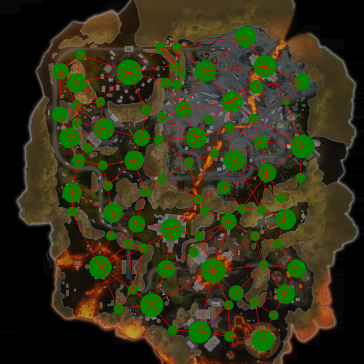
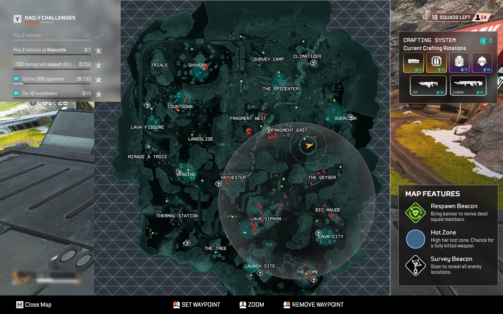
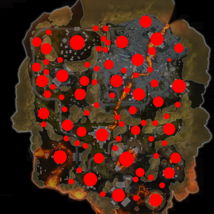
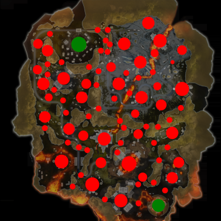
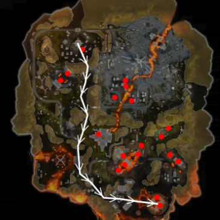

A python program to compute the safest path between two locations in apex legends. It uses a custom variant of graph path finding that focuses on speed of computing the path, and actual distance from start to finish instead of node count.
These instructions will get you a copy of the project up and running on your local machine for development and testing purposes.
git clone https://github.com/happihound/apex-rotation-advice.git
cd apex-rotation-advice
pip install -r requirements.txt
python main.py
This utility accepts the following command line arguments:
To see all valid command line arguments:
main.py -h
To start the association viewer utility:
main.py association -mapName= -mode=
To start the safe path viewer utility:
main.py findSafePath -mapName= -ratio=
In order to use the utility, follow these steps:
Note: The ratio argument refers to the ratio of the screenshot placed in the inputScan folder. If no ratio is provided, the program will attempt to find it, but it's not always accurate, so it's recommended to provide the ratio.
Viewing all association data for World's Edge:
python main.py association -mapName=WE -mode=all

Example input screenshot:
Finding a safe path between two poi's on worlds edge from the 16:10 aspect ratio screenshot:
python main.py findSafePath -mapName=WE -ratio=16:10
Running the above command will open this window where you can select the poi's:
Example of Lava and Skyhook selected:
Result of the safe path:
To run the tests, execute:
python run_tests.py
Have an idea? Feel free to open an issue or pull request and I'll look into it!
This project is not to be used for commercial purposes or any other purpose other than personal use. Credit must be given to the original author if used in any other project. It may not be used in any project that is not open source.